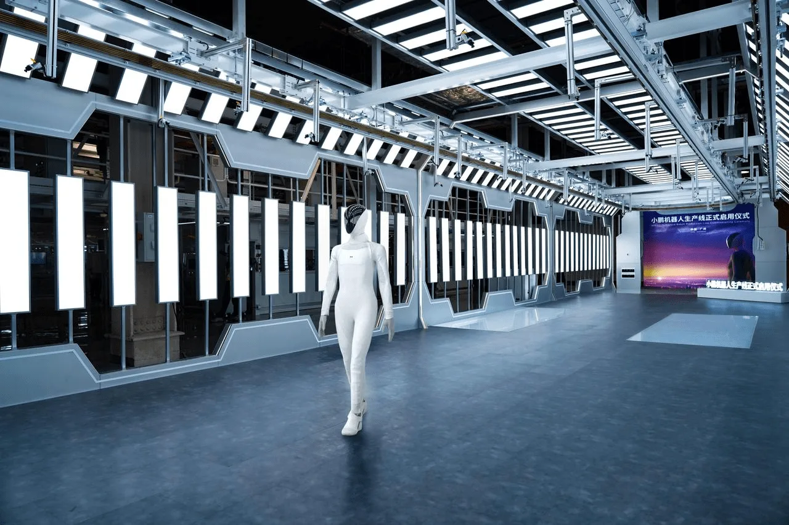
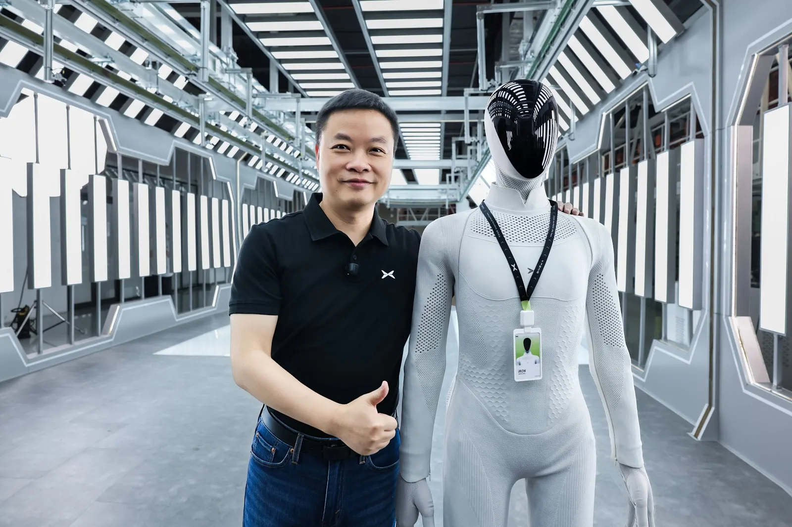
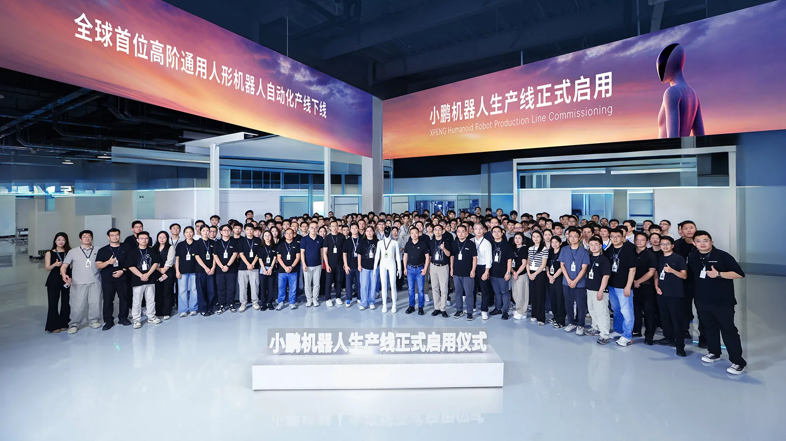

▲ 광저우 생산시설의 자동화 라인을 따라 걷는 아이언. 오른쪽으로 산업용 로봇 팔이 늘어선 조립 라인이 보인다
1. 광저우에서 열린 로봇 생산라인 가동식
중국 전기차업체 샤오펑(XPeng)이 2026년 9월 8일 광저우에서 자사 휴머노이드 로봇 '아이언(IRON)'의 양산 라인을 정식 가동했다. 회사 측은 이를 "세계 최초의 첨단 휴머노이드 로봇 자동화 생산라인"이라고 소개했으며, 핵심 공정의 80% 이상이 자동화된 것이 특징이다. 행사장에는 "小鹏机器人生产线正式启用仪式(샤오펑 로봇 생산라인 정식 가동식)"이라는 문구가 내걸렸고, 아이언은 사람의 원격 조종 없이 스스로 라인을 걸어 나오는 장면을 시연했다.
샤오펑은 그동안 전기차 G6, G9, P7 등을 통해 쌓아온 자동차 제조 노하우를 로봇 생산에 그대로 옮겼다고 설명한다. 자동차급 품질관리 체계와 정밀 제조 공정을 로봇 조립에 적용했다는 것이 회사 측 설명이다.

▲ 가동식 행사장에 전시된 아이언. 뒤편 스크린에 'XPENG Humanoid Robot Production Line Commissioning Ceremony'라는 문구가 보인다 ⓒ XPeng
2. 76 자유도, 자체 개발 튜링 AI칩 3개… 아이언의 스펙
아이언은 전신 76개의 자유도(관절 축)와 양손 각각 21개씩의 자유도를 갖춰, 총 100개가 넘는 관절 축으로 사람과 유사한 동작을 구현한다. 두뇌에 해당하는 연산 장치로는 샤오펑이 자체 개발한 '튜링(Turing)' AI칩 3개를 탑재했으며, 이를 통해 최대 2,250 TOPS의 연산 성능을 낸다. 유연한 격자 구조의 인공 피부가 적용돼 사람과 부딪혀도 비교적 안전하도록 설계됐다는 것이 회사 측 설명이다.
| 구분 | 샤오펑 아이언(IRON) | 테슬라 옵티머스 |
|---|---|---|
| 양산 라인 가동 | 2026년 9월 완료(광저우) | 자동차 라인 전환 중, 미완료 |
| 자유도 | 전신 76+양손 각 21 | 공식 발표치 미확정 |
| AI칩/연산능력 | 자체 개발 튜링칩 3개, 최대 2,250 TOPS | 자체 개발 AI4 칩 기반 |
| 2026년 목표 생산량 | 연말까지 대량 생산 개시 | 당초 약 1만 대 예측, 지연 중 |
📍 자유도(Degrees of Freedom)란
자유도는 로봇이 한 관절에서 독립적으로 움직일 수 있는 축의 개수를 뜻한다. 사람의 팔 하나만 해도 어깨·팔꿈치·손목에서 여러 방향으로 움직일 수 있는데, 로봇의 자유도가 높을수록 더 섬세하고 사람에 가까운 동작이 가능해진다. 아이언의 손 하나당 21자유도는 산업용 로봇 기준으로도 매우 높은 수준이다.
3. "전례 없는 제품 카테고리"… 창업자가 로봇 목에 걸어준 사원증
가동식에는 샤오펑 회장 겸 CEO 허샤오펑(He Xiaopeng)이 직접 참석해 아이언의 목에 직원 사원증을 걸어주는 상징적인 제스처를 선보였다. 그는 "우리는 전례 없는 새로운 제품 카테고리를 위한 생산 라인을 처음부터 구축했다"고 말하며, 이번 라인 가동이 로봇 사업의 연구개발 단계를 벗어나 실제 양산 체계로 넘어가는 전환점이라는 점을 강조했다.
자금 측면에서도 뒷받침이 이뤄졌다. 샤오펑의 로보틱스 사업부는 지난 8월 IDG캐피탈 주도로 가오룽벤처스가 참여하고 텐센트·알리바바가 전략적 투자자로 힘을 보탠 라운드에서 9억 달러(약 900백만 달러) 이상을 조달했다. 이는 중국 실체화 AI(embodied AI) 업계 사상 최대 규모의 단일 라운드 투자로, 이 시점 로보틱스 사업부의 기업가치는 63억 달러(약 6.3billion) 이상으로 평가됐다.

▲ 허샤오펑 회장(왼쪽)이 아이언과 나란히 섰다. 아이언이 목에 건 사원증에는 'IRON'이라는 이름이 적혀 있다 ⓒ XPeng
4. 연말 양산, 2027년 판매… 로드맵
샤오펑은 2026년 말까지 아이언의 대량 생산 체제를 갖추고, 우선 자사 매장과 사내 캠퍼스에 배치해 안내·접객 등의 역할을 맡길 계획이다. 이후 2027년부터는 중국과 해외 시장에 공식 출시해 외부 고객 대상 판매·배송을 시작한다는 방침이다. 장기적으로는 2030년까지 월 1,000대 이상의 생산 능력을 확보하겠다는 목표도 제시했다.
구체적인 초기 활용 분야로는 매장 안내·접객, 사내 서비스, 공장 보조 작업 등이 거론되며, 향후 가정용 서비스 로봇으로도 영역을 넓힐 수 있다는 것이 업계 전망이다. 관련 소식은 샤오펑 공식 뉴스룸에서 확인할 수 있다. 바로가기

▲ 가동식 현장에서 임직원들과 함께한 기념사진. 배너에는 "전 세계 최초의 첨단 휴머노이드 로봇 자동화 생산라인 가동"이라는 문구가 적혀 있다 ⓒ XPeng
5. 테슬라 옵티머스는 왜 정체됐나
이번 발표가 더 주목받는 이유는 경쟁사인 테슬라의 상황과 대비되기 때문이다. 일론 머스크 테슬라 CEO는 2026년 한 해 동안 옵티머스를 약 1만 대가량 생산하겠다고 예고한 바 있다. 하지만 실제로는 여전히 기존 자동차 생산라인을 로봇 생산용으로 전환하는 단계에 머물러 있는 것으로 알려지며, 본격적인 양산은 지연되고 있는 상황이다.
반면 샤오펑은 처음부터 로봇 전용 자동화 라인을 새로 구축해 가동에 들어갔다는 점에서 차이가 있다. 두 회사 모두 자동차 제조업에서 출발해 휴머노이드 로봇으로 사업을 확장하고 있다는 공통점이 있지만, 실제 양산 착수 시점에서는 샤오펑이 한발 앞서 나간 모양새다.
✅ 샤오펑 아이언 양산, 이것만은 확인하세요
· 2026년 9월 8일 중국 광저우에서 로봇 전용 자동화 생산라인 가동
· 핵심 공정 80% 이상 자동화, 아이언은 원격 조종 없이 스스로 라인 이탈
· 전신 76자유도+양손 각 21자유도, 자체 개발 튜링 AI칩 3개(최대 2,250 TOPS)
· 2026년 말 대량 생산 개시, 2027년 중국·해외 판매 시작 목표
· 로보틱스 사업부는 8월 9억 달러 이상 조달, 기업가치 63억 달러 이상
6. 정리
샤오펑의 휴머노이드 로봇 아이언은 광저우에 마련된 전용 자동화 라인에서 원격 조종 없이 스스로 걸어 나오며 양산 체제 전환을 알렸다. 76자유도의 관절과 자체 개발 AI칩, 9억 달러 규모의 신규 투자까지 뒷받침된 만큼, 연말 대량 생산과 2027년 판매라는 목표가 현실화될지 주목된다. 반면 같은 자동차 제조사 출신인 테슬라의 옵티머스는 아직 생산라인 전환 단계에 머물러 있어, 두 회사의 로봇 사업 속도 차이가 앞으로 더 벌어질 가능성도 제기된다.